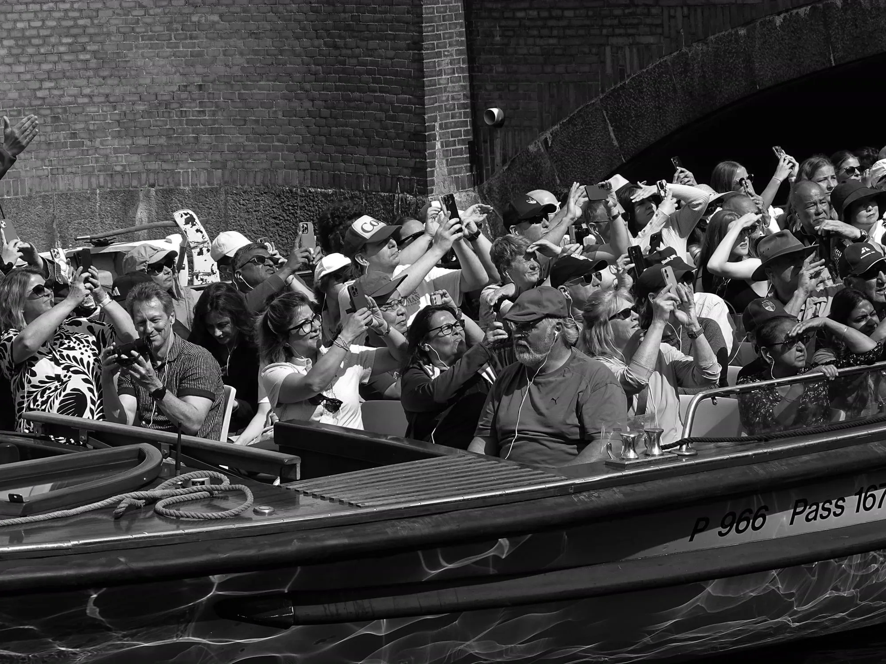
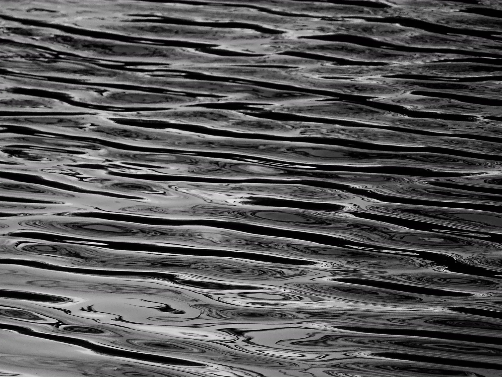

Cinq séries menées entre Lyon, le Danemark, le Sri Lanka, l'Albanie et Arles.
Expérimentations entre cyanotype, charbon, fragilité, altération.
Photographies numériques et argentiques, noir et blanc et couleur, 2025–2026. À travers portraits et autoportraits pris sur le vif, je cherche à saisir des présences et des expressions dans la spontanéité de l'instant.

Je pratique la photographie, en argentique et en numérique, à la recherche d'instants fugitifs et de fragments du quotidien. Mon travail s'attache aux présences et aux situations qui apparaissent dans l'observation du réel.
Parallèlement, je développe une approche expérimentale autour de la fragilité et de la transformation de l'image. En travaillant avec des procédés comme le cyanotype et la matière pelliculaire, j'explore la dimension matérielle de la photographie et les altérations qui peuvent en révéler de nouvelles formes.
N'hésitez pas à me contacter.